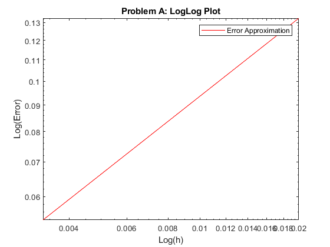
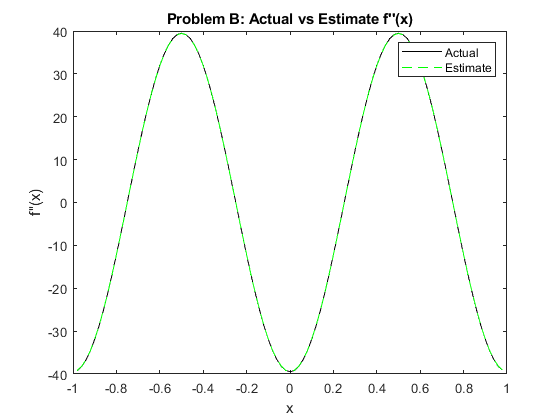

Contents
Zack Humphries
COMP 521 HW2
clc; % clear command window clear; % removes all saved variables close all; % close any open windows
h = 0.02; % sets h number_of_grids = 4; % grid sizes for error plot x_interval = -1+h : h : 1-h; % sets interval [-1 to 1] for xi with h gap
Problem A
[estimate_interval, actual_interval,estimate_middle,actual_middle] = ... problem_1(x_interval,h); % returns estimate vs actual and middle estimate vs actual for reference % Plotting Problem A: Actual vs Estimate f''(x) plot(x_interval, actual_interval, 'k-') hold on; plot(x_interval, estimate_interval, 'r--') legend("Actual", "Estimate") xlabel("x") ylabel("f''(x)") title("Problem A: Actual vs Estimate f''(x)") hold off % Returns all h intervals (ex. [h, h/2, h/4, h/8,...]) and the error % approximation for each h/(2*n). Takes in problem_number (1 for A and 2 % for B) problem_number = 1; % 1 for Problem A [h_interval, error_list] = grid_reduction(h,number_of_grids, problem_number); % Plotting Problem A: LogLog Plot figure(2) loglog(h_interval, error_list, 'r-') legend("Error Approximation") xlabel("Log(h)") ylabel("Log(Error)") title("Problem A: LogLog Plot") hold off
Problem B
[estimate_interval, actual_interval,estimate_middle,actual_middle] = ... problem_2(x_interval,h); % Plotting Problem B: Actual vs Estimate f''(x) figure(3) plot(x_interval, actual_interval, 'k-') hold on; plot(x_interval, estimate_interval, 'g--') legend("Actual", "Estimate") xlabel("x") ylabel("f''(x)") title("Problem B: Actual vs Estimate f''(x)") hold off problem_number = 2; % 2 for Problem B [h_interval, error_list] = grid_reduction(h,number_of_grids, problem_number); % Plotting Problem B: LogLog Plot figure(4) loglog(h_interval, error_list, 'g-') legend("Error Approximation") xlabel("Log(h)") ylabel("Log(Error)") title("Problem B: LogLog Plot") hold off
Functions used for calculations
function [h_interval, error_list] = grid_reduction(h,number_of_grids, problem_number) h_interval = zeros(1,number_of_grids); % sets empty array for future h/# values error_list = zeros(1,number_of_grids); % sets empty array for error approximations h_div = h; % initializes first h = h for n=1:number_of_grids h_interval(n) = h_div; % replaces 0 in empty array with actual h/# value interval = -1+h_div : h_div : 1-h_div; % makes fresh xi interval with h/# as gap if problem_number == 1 % If problem A, returns estimate vs actual for each xi based on h/# gap AND estimate and actual middle value for loglog graph [estimate_interval, actual_interval,estimate_middle,actual_middle] = ... problem_1(interval,h_div); elseif problem_number == 2 % If problem B... [estimate_interval, actual_interval,estimate_middle,actual_middle] = ... problem_2(interval,h_div); end error = (abs(estimate_middle-actual_middle))^(1.0/number_of_grids); % error approximation error_list(n) = error; % replaces 0 in empty error_list array with error approximation h_div = h/(n*2); % sets new h value (h/(2*grid_size)) end end function [estimate_interval, actual_interval,estimate_middle,actual_middle] = ... problem_1(interval,h) % Problem A interval_length = length(interval); % saves number of xi's in x_interval estimate_interval = zeros(1,length(interval)); % makes empty array for estimate f"(x) actual_interval = zeros(1,length(interval)); % makes empty array for actual f"(x) for n=1:interval_length xi = interval(n); % goes through each xi ui = problem_1_f(xi); % returns f(xi) for f"(xi) estimation ui_plus = problem_1_f(xi + h); % returns f(xi+h) for f"(xi) estimation ui_minus = problem_1_f(xi - h); % returns f(xi+h) for f"(xi) estimation estimate_interval(n) = f_double_prime(ui_plus,ui,ui_minus,h); % estimate f"(xi) actual_interval(n) = problem_1_f_double_prime(xi); % actual f"(xi) end estimate_middle = estimate_interval((interval_length+1)/2); % since x_interval will always have an odd number of values, actual_middle = actual_interval((interval_length+1)/2); % (interval_length+1)/2 will always return middle estimate/actual end function [estimate_interval, actual_interval,estimate_middle,actual_middle] = ... problem_2(interval,h) % Problem B interval_length = length(interval); % ... estimate_interval = zeros(1,length(interval)); actual_interval = zeros(1,length(interval)); for n=1:interval_length xi = interval(n); ui = problem_2_f(xi); ui_plus = problem_2_f(xi + h); ui_minus = problem_2_f(xi - h); estimate_interval(n) = f_double_prime(ui_plus,ui,ui_minus,h); actual_interval(n) = problem_2_f_double_prime(xi); end estimate_middle = estimate_interval((interval_length+1)/2); actual_middle = actual_interval((interval_length+1)/2); end function result = f_double_prime(ui_plus,ui,ui_minus,h) result = (ui_plus - (2*ui) + ui_minus)/(h^2); % centered finite difference approximation of f"(x) end function result = problem_1_f(x) result = exp(x)*sin((pi*x)/2); % Returns f(x) for Problem A end function result = problem_1_f_double_prime(x) result = -(1/4) * exp(x)*(((pi^2)-4)*sin(pi*x/2)-4*pi*cos(pi*x/2)); % Returns actual f"(x) for Problem A end function result = problem_2_f(x) result = 2*(cos(pi*x)^2)-1; % Returns f(x) for Problem B end function result = problem_2_f_double_prime(x) result = 4*(pi^2)*((sin(pi*x)^2)-(cos(pi*x)^2)); % Returns actual f"(x) for Problem B end